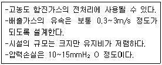
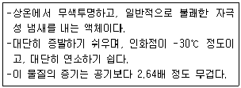
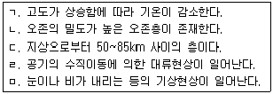
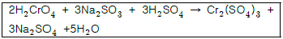
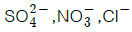
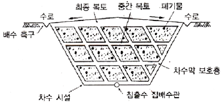
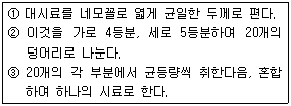

환경기능사 (2011-10-09 기출문제)
1과목: 대기오염방지
1. 다음 기체연료 중 저위발열량이 가장 큰 것은?
- 수소
- 메탄
- 부탄
- 에탄
(정답률: 63%)

2. 집진장치 출구 가스의 먼지농도가 0.02g/m3, 먼지통 과율은 0.5% 일 때, 입구 가스 먼지농도(g/m3)는?
- 3.5g/m3
- 4.0g/m3
- 4.5g/m3
- 8.0g/m3
(정답률: 65%)
3. 황함유량 1.5%인 액체연료 20톤을 이론적으로 완전연소시킬 때 생성되는 SO2의 부피는? (단, 연료 중 황은 완전연소하여 100% SO2 로 전환된다.
- 140Sm3
- 170Sm3
- 210Sm3
- 250Sm3
(정답률: 53%)
4. 감압 또는 진공이라 함은 따로 규정이 없는 한 얼마 이하를 의미하는가?
- 15mmHg 이하
- 20mmHg 이하
- 30mmHg 이하
- 76mmHg 이하
(정답률: 73%)
5. 다음 연소의 종류 중 니트로글리세린과 같이 공기중의 산소 공급 없이 그 물질의 분자 자체에 함유하고 있는 산소를 이용하여 연소하는 것은?
- 분해연소
- 증발연소
- 자기연소
- 확산연소
(정답률: 80%)
6. <보기>와 같은 특성을 지닌 집진장치는?

- 중력 집진장치
- 원심력 집진장치
- 여과 집진장치
- 전기 집진장치
(정답률: 62%)
7. 연소시 연소상태를 조절하여 질소산화물 발생을 억제하는 방법으로 가장 거리가 먼 것은?
- 저온도 연소
- 저산소 연소
- 공급공기량의 과량 주입
- 수증기 분무
(정답률: 83%)
8. <보기>에 해당하는 대기오염물질은?

- 아황산가스
- 이황화탄소
- 이산화질소
- 일산화질소
(정답률: 60%)
9. A집진 장치의 압력손실이 444mmH2O, 처리가스량이 55m3/s인 송풍기의 효율이 77%일 때 이 송풍기의 소요동력은?
- 256kw
- 286kw
- 298kw
- 311kw
(정답률: 46%)
10. 다음 대기오염물질 중 특정대기 유해물질에 해당하지 않는 것은?
- 프로필렌 옥사이드
- 석면
- 벤지딘
- 이산화황
(정답률: 51%)
11. 런던형스모그에 관한 설명으로 가장 거리가 먼 것은?
- 주로 아침 일찍 발생한다.
- 습도와 기온이 높은 여름에 주로 발생한다.
- 복사역전 형태이다.
- 시정거리가 100m 이하이다.
(정답률: 75%)
12. <보기>중 대류권에 해당하는 사항으로만 옳게 나열된 것은?

- ㄱ, ㄴ,ㄷ
- ㄱ,ㄹ, ㅁ
- ㄷ, ㄹ,ㅁ
- ㄴ,ㄷ, ㄹ
(정답률: 79%)
13. 다음 실내공기 오염물질 중 주로 단열재, 절연재, 브레이크, 방열재 등에서 발생되며 인체에 다량 흡입되면 피부질환, 호흡기질환, 폐암, 중피종 등을 유발시키는 것은?
- 총부유세균
- 석면
- 오존
- 일산화탄소
(정답률: 75%)
14. 관성력 집진장치에서 집진율 향상조건으로 옳지 않은 것은?
- 일반적으로 충돌직전의 처리가스의 속도가 적고, 처리후의 출구 가스속도는 빠를수록 미립자의 제거가 쉽다.
- 기류의 방향전환 각도가 작고, 방향전환 횟수가 많을수록 압력손실은 커지나 집진은 잘 된다.
- 적당한 모양과 크기의 호퍼가 필요하다.
- 함진 가스의 충돌 또는 기류의 방향전환 직전의 가스속도가 빠르고, 방향전환시의 곡률반경이 작을수록 미세입자의 포집이 가능하다.
(정답률: 54%)
15. 0.3g/Sm3 인 HCI의 농도를 ppm으로 환산하면? (단, 표준상태 기준)
- 116.4ppm
- 137.7ppm
- 167.3ppm
- 184.1ppm
(정답률: 30%)
2과목: 폐수처리
16. 농도를 알 수 없는 염산 50mL를 완전히 중화시키는데 0.4N수산화나트륨 25mL가 소모되었다. 이 염산의 농도는?
- 0.2N
- 0.4N
- 0.6N
- 0.8N
(정답률: 49%)
17. 탱크에 쇄석 등의 여재를 채우고 위에서 폐수를 뿌려 쇄석 표면에 번식하는 미생물이 폐수와 접촉하여 유기물을 섭취분해하여 폐수를 생물학적으로 처리하는 방식은?
- 활성슬러지법
- 호기성 산화지법
- 회전원판법
- 살수여상법
(정답률: 70%)
18. 어느 공장폐수의 Cr6+이 600mg/L이고, 이 폐수를 아황산나트륨으로 환원처리 하고자 한다. 폐수량이 40 m3/day일 때, 하루에 필요한 아황산나트륨의 이론양은? (단, Cr의 원자량은 52, Na2SO3의 분자량은 126, 반응식은 아래 식을 이용하여 계산하시오.)

- 72kg
- 80kg
- 87kg
- 95kg
(정답률: 51%)
19. 활성슬러지 공법에 의한 운영상의 문제점으로 옳지 않은 것은?
- 거품 발생
- 연못화 현상
- Floc 해체 현상
- 슬러지부상 현상
(정답률: 73%)
20. 물의 깊이에 따라 나타나는 수온성층에 해당되지 않는 것은?
- 수온약층
- 표수층
- 변수층
- 심수층
(정답률: 71%)
21. 실험실에서 일반적으로 BOD5를 측정할 때 배양 조건은?
- 5℃에서 10일간 배양
- 5℃에서 20일간 배양
- 20℃에서 5일간 배양
- 20℃에서 10일간 배양
(정답률: 72%)
22. 경도(Har dness)에 관한 설명으로 옳지 않은 것은?

와 화합물을 이루고 있을 때 나타나는 경도를 영구경도라고도 한다.- 경도가 높은 물은 관로의 통수저항을 감소시켜 공업용수(섬유제지 등)로 적합하다.
- 탄산경도는 일시경도라고도 한다.
- Na+은 경도를 유발하는 이온은 아니지만 그 농도가 높을 때 경도와 비슷한 작용을 하므로 유사경도라 한다.
(정답률: 58%)
23. 오염물질과 피해형태의 연결로 가장 거리가 먼 것은?
- 페놀 -냄새
- 인 -부영양화
- 유기물 -용존산소결핍
- 시안 -골연화증
(정답률: 65%)
24. 활성슬러지법의 미생물 성장은 35℃ 정도까지의 경우 10℃ 증가할 때마다 그 성장속도가 일반적으로 몇 배로 증가되는가?
- 2배로 증가
- 16배로 증가
- 32배로 증가
- 64배로 증가
(정답률: 61%)
25. 생물학적 원리를 이용하여 폐수 중의 인과 질소를 동시에 제거하는 공정 중 혐기조의 역할로 가장 적합한 것은?
- 유기물 흡수, 인의 과잉 흡수
- 유기물 흡수, 인 방출
- 유기물 흡수, 탈질소
- 유기물 흡수, 질산화
(정답률: 72%)
26. 물 속에서 입자가 침강하고 있을 때 스톡스(Stokes)의 법칙이 적용된다고 한다. 다음 중 입자의 침강속도에 가장 큰 영향을 주는 변화인자는?
- 입자의 밀도
- 물의 밀도
- 물의 점도
- 입자의 직경
(정답률: 75%)
27. 부피 150m3 인 종말침전지로 유입되는 폐수량이 900m3/day일 때, 이 침전지의 체류시간은?
- 3시간
- 4시간
- 5시간
- 6시간
(정답률: 47%)
28. 다음 중 지하수의 일반적인 수질특성에 관한 설명으로 옳지 않은 것은?
- 수온의 변화가 심하다.
- 무기물 성분이 많다.
- 지질 특성에 영향을 받는다.
- 지표면 깊은 곳에서는 무산소 상태로 될 수 있다.
(정답률: 76%)
29. 다음 중 생물학적 고도 폐수처리 방법으로 인을 제거할 수 있는 공법으로 가장 거리가 먼 것은?
- A/O 공법
- Indore 공법
- Phostrip 공법
- bardenpho 공법
(정답률: 49%)
30. 다음 중 해양오염 현상으로 거리가 먼 것은?
- 적조
- 부영양화
- 용전산소과포화
- 온열배수유입
(정답률: 61%)
31. 물의 성질에 관한 설명으로 옳지 않은 것은?
- 물 분자 안의 수소는 부분적으로 양전한(δ+)를, 산소는 부분적으로 음전하(δ-)를 갖는다.
- 물은 분자량이 유사한 다른 화합물에 비하여 비열은 작고, 압축성이 크다.
- 물은 4℃부근에서 최대 밀도를 나타낸다.
- 일반적으로 물의 점도는 온도가 높아짐에 따라 작아진다.
(정답률: 58%)
32. 폐수의 화학적 산소요구량을 측정하기 위해 산성 100℃ 과망간산칼륨법으로 측정하였다. 바탕시험 적정에 소비된 0.025N 과망간산칼륨 용액의 양이 0.1mL, 시료용액의 적정에 소비된 0.025N 과망간산칼륨 용액의 양이 5.1mL일때 COD(mg/L)는? (단, 0.025N 과망간산칼륨의 역가는 1.000, 시험에 사용한 시료의 양은 100mL이다.)
- 4.0mg/L
- 6.0mg/L
- 8.0mg/L
- 10.0mg/L
(정답률: 41%)
33. 레이놀즈수의 관계인자와 거리가 먼 것은?
- 입자의 지름
- 액체의 점도
- 액체의 비표면적
- 입자의 속도
(정답률: 55%)
34. 하천의 유량은 1000m3/일, BOD농도 26ppm 이며, 이 하천에 흘러드는 폐수의 양이 100m3/일, BOD농도 165ppm 이라고 하면 하천과 폐수가 완전혼합된 후 BOD농도는? (단, 혼합에 의한 기타 영향 등은 고려하지 않는다.)
- 38.6ppm
- 44.9ppm
- 48.5ppm
- 59.8ppm
(정답률: 30%)
35. 다음 중 오염원별 하·폐수 발생량이 가장 많은 것은?
- 생활하수
- 공장폐수
- 축산폐수
- 매립지 침출수
(정답률: 68%)
3과목: 폐기물처리
36. 다음 중 수분 및 고형물 함량 측정에 필요한 실험 기구와 거리가 먼 것은?
- 증발접시
- 전자저울
- jar-테스터
- 데시케이터
(정답률: 76%)
37. 탄소 6kg이 이론적으로 완전연소 할 때 발생하는 이산화 탄소의 양(kg)은?
- 44kg
- 36kg
- 22kg
- 12kg
(정답률: 43%)
38. 인구 100,000명이 거주하고 있는 도시에 1인 1일당 쓰레기 발생량이 평균 1kg이다. 전재용량 4.5톤 트럭을 이용하여 하루에 수거를 마치려면 최소 몇 대가 필요한가?
- 12대
- 20대
- 23대
- 32대
(정답률: 63%)
39. 다음 폐기물의 감량화 방안 중 폐기물이 발생원에서 발생되지 않도록 사전에 조치하는 발생원 대책으로 거리가 먼 것은?
- 적정 저장량 관리
- 과대포장 사용안하기
- 철저한 분리수거 실기
- 폐기물로부터 회수에너지 이용
(정답률: 72%)
40. RDF(Refuse Derived Fuel)의 구비조건으로 가장 거리가 먼 것은?
- 열함량이 높고 동시에 수분함량이 낮아야 한다.
- 염소 함량이 낮아야 한다.
- 미생물 분해가 가능하며, 재의 함량이 높아야 한다.
- 균질성이어야 한다.
(정답률: 57%)
41. 폐기물의 3성분이라 볼 수 없는 것은?
- 수분
- 무연분
- 회분
- 가연분
(정답률: 64%)
42. 폐기물의 저위발열량(LHV)을 구하는 식으로 옳은 것은? (단, HHV : 폐기물의 고위발열량((kcal/kg), H : 폐기물의 원소분석에 의한 수소 조성비(kg/kg), W : 폐기물의 수분 함량(kg/kg), 600 : 수증기 1kg의 응축열(kcal))
- LHV=HHV-600W
- LHV=HHV-600(H+W)
- LHV=HHV-600(9H+W)
- LHV=HHV+600(9H+W)
(정답률: 74%)
43. 밀도가 0.4t/m3인 쓰레기를 매립하기 위해 밀도 0.85t/m3 으로 압축하였다. 압축비는?
- 0.6
- 1.8
- 2.1
- 3.3
(정답률: 54%)
44. 다음 중 일반적인 슬러지처리 계통도를 바르게 나열한 것은?
- 농축->안정화->개량->탈수->소각->최종처분
- 농축->안정화->소각->탈수->개량->최종처분
- 안정화->개량->탈수->농축->소각->최종처분
- 안정화->농축->탈수->개량->소각->최종처분
(정답률: 71%)
45. 도시에서 생활쓰레기를 수거할 때 고려할 사항으로 가장 거리가 먼 것은?
- 처음 수거지역은 차고지에서 가깝게 설정한다.
- U자형 회전을 피하여 수거한다.
- 교통이 혼잡한 지역은 출 · 퇴근 시간을 피하여 수거한다.
- 쓰레기가 적게 발생하는 지점은 하루 중 가장 먼저 수거하도록 한다.
(정답률: 86%)
46. 연소가스의 잉여열을 이용하여 보일러에 주입되는 물을 예열함으로써 보일러드럼에 발생되는 열응력을 감소시켜 보일러의 효율을 높이는 장치는?
- 과열기(super heater)
- 재열기(reheater)
- 절탄기(economizer)
- 공기예열기(air preheater)
(정답률: 69%)
47. 폐기물 수거 효율을 결정하고 수거작업간의 노동력을 비교하기 위한 단위로 옳은 것은?
- ton/man . hour
- man . hour/ton
- ton . man/hour
- hour/ton . man
(정답률: 80%)
48. 아래 그림과 같은 내륙매립공법은?

- 셀공법
- 수중투기공법
- 순차투입공법
- 박층뿌림공법
(정답률: 73%)
49. 다음 중 안정된 매립지에서 가장 많이 발생되는 가스는?
- CH4
- O2
- N2
- H2S
(정답률: 69%)
50. 소각로에서 완전연소를 위한 3가지 조건(일명 3T)으로 옳은 것은?
- 시간-온도-혼합
- 시간-온도-수분
- 혼합-수분-시간
- 혼합-수분-온도
(정답률: 78%)
51. 85%의 함수율을 갖고 있는 쓰레기를 건조시켜 함수율이 25%가 되었다면 쓰레기 1톤에 대하여 증발하는 수분의 양은? (단, 비중은 모두 1.0)
- 600kg
- 700kg
- 800kg
- 900kg
(정답률: 47%)
52. 폐기물 분석시료를 얻기 위한 시료의 축소방법 중 다음 <보기>에 해당하는 것은?

- 균일법
- 구획법
- 교호삽법
- 원추사분법
(정답률: 56%)
53. 유해 폐기물의 국가간 불법적인 교역을 통제하기 위한 국제협약은?
- 교토의정서
- 바젤협약
- 리우협약
- 몬트리올의정서
(정답률: 80%)
54. 폐기물의 안정화에 관한 설명으로 거리가 먼 것은?
- 폐기물의 물리적 성질을 변화시켜 취급하기 쉬운 물질을 만든다.
- 오염물질의 손실과 전달이 발생할 수 있는 표면적을 감소시킨다.
- 폐기물내 오염물질의 용존성 및 용해성을 증가시킨다.
- 오염물질의 독성을 감소시킨다.
(정답률: 61%)
55. 다음 중 적환장이 필요한 경우와 거리가 먼 것은?
- 수집 장소와 처분 장소가 비교적 먼 경우
- 작은 용량의 수집 차량을 사용할 경우
- 작은 규모의 주택들이 밀집되어 있는 경우
- 상업지역에서 폐기물 수거에 대형 용기를 주로 사용하는 경우
(정답률: 69%)
4과목: 소음 진동학
56. 방음대책을 음원대책과 전파경로대책으로 구분할 때 다음 중 음원대책이 아닌 것은?
- 소음기 설치
- 방음벽 설치
- 공명방지
- 방진 및 방사율 저감
(정답률: 64%)
57. 소음통계레벨(LN)에 관한 설명으로 옳지 않은 것은?
- L
- L10은 80%레인지 상단치라고 한다.
- 총 측정시간의 N(%)를 초과하는 소음레벨을 의미 한다.
- L90은 L10 보다 큰 값을 나타낸다.
(정답률: 60%)
58. 아파트 벽의 음향투과율이 0.1% 라면 투과손실은?
- 10dB
- 20dB
- 30dB
- 50dB
(정답률: 47%)
59. 소음의 영향으로 옳지 않은 것은?
- 소음성난청은 소음이 높은 공장에서 일하는 근로자들에게 나타나는 직업병으로 4000Hz 정도에서부터 난청이 시작된다.
- 단순 반복작업보다는 보통 복잡한 사고, 기억을 필요로 하는 작업에 더 방해가 된다.
- 혈중 아드레날린 및 백혈구 수가 감소한다.
- 말초혈관 수축, 맥박증가 같은 영향을 미친다.
(정답률: 62%)
60. 다음 중 다공질 흡음재료에 해당하지 않는 것은?
- 암면
- 유리섬유
- 발포수지재료(연속기포)
- 석고보드
(정답률: 43%)